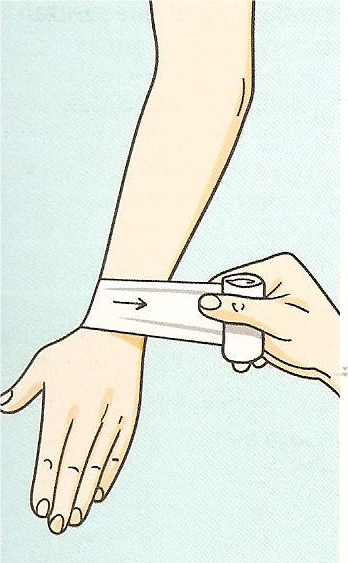
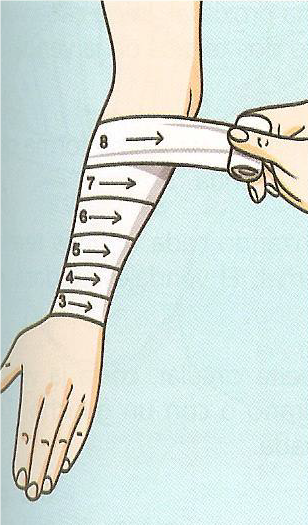
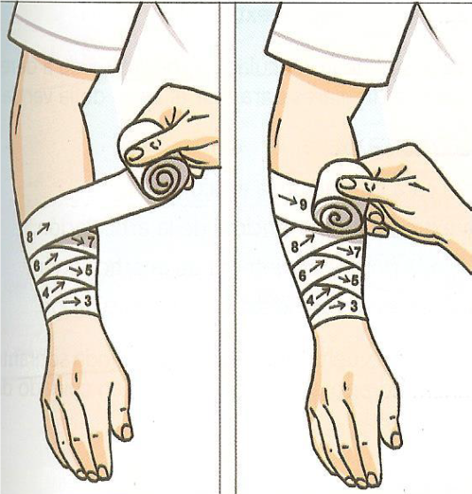
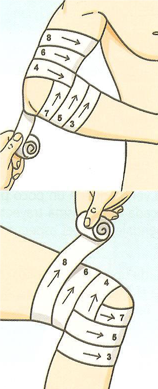
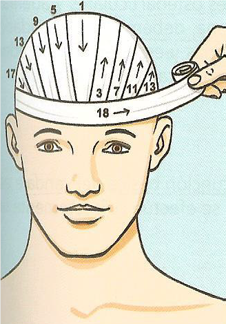

Tipos |
Circular | Espiral | Espiga | Ocho | Cabestrillo |
|---|---|---|---|---|---|
| Aplica para: | Dedos, muñecas o brazos. | Se usa en extremidades. | Para articulaciones como rodillas o codos. | Se utiliza para tobillos, muñecas o clavícula. | Se emplea para fracturas de brazo o antebrazo. |
| Aplicacion: | Cubre la zona con vueltas que se sobreponen por completo | Se enrolla en forma ascendente dejando parte del vendaje anterior visible. | Tiene forma de "X" y proporciona mayor firmeza. | Cruza en forma de 8 para asegurar dos zonas. | El brazo se sostiene en un triángulo de tela atado al cuello. |
| Imagen |  |  |  |  |  |
Regresar: Automedicacion
Regresar:Primeros Auxilios